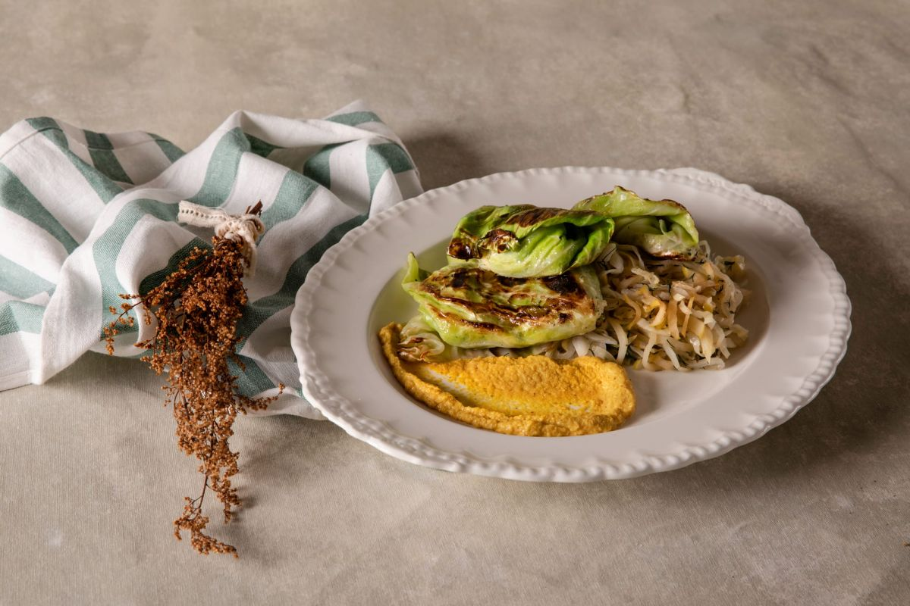
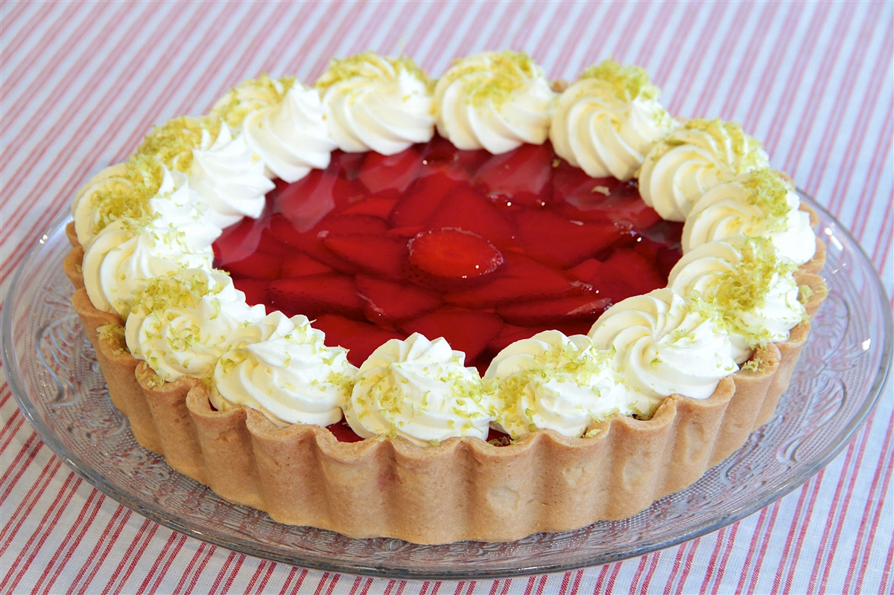
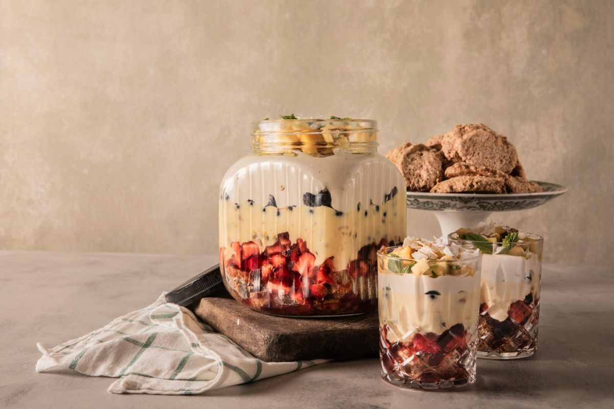

TODAS LAS RECETAS ESTAN EN ESTE ÍNDICE
Receta de Niños Envueltos de RepolloReceta de Tarta de Fresas
Receta de Triffle de Maracuyá y Merengue de Nuez
Receta de Niños Envueltos de Repollo
INGREDIENTES
- Cebolla grande 1 unidad
- Leche 2 Tazas
- Diente de ajo 1 unidad
- Huevo 1 unidad
- Miga de pan 1 Taza
- Perejil c/n
- Repollo blanco grande 1 unidad
- Sal y pimienta c/n
PASO A PASO
- Retirar las hojas grandes enteras del repollo y ponerlas por 1 minuto en una olla con agua hirviendo para que se ablanden.
- Reservar.
- Picar la cebolla, el ajo y la parte interior del repollo y dorar en aceite de oliva por 5 minutos .
- Remojar la miga de pan en leche por 10 minutos, escurrir y agregar al sofrito.
- Salpimentar y una vez tibio agregar el huevo y perejil picado.
- Armar los niños envueltos colocando una cucharada del relleno en la parte inferior de las hojas de repollo hervidas previamente y formar enrollando plegando los laterales de la hoja para que no se escape el relleno.
- Colocar en una olla con un poco de aceite para dorar levemente y calentar.
- Servir los niños envueltos con una cucharada de puré de manzanas
Receta de Tarta de Fresas
INGREDIENTES
PARA EL RELLENO
- Crema de leche 100 g
- Crema Chantilly250 g
- Frutillas 300 g
- Agua Fria 250 cc
- Pistachos Cantidad necesaria
- Gelatina de frutilla 50 g
- Agua caliente 250 cc
- Crema pastelera 200 g
- Kirach 30 cc
PARA LA MASA SUCREE
- Harina 0000 250 g
- Manteca pomada 110 g
- Sal 5 g
- Esencia de vainilla 2 cditas
- Azucar135 g
- Huevos 1 unidad
PASO A PASO
PARA LA MASA SUCREE
- Para comenzar, mezclamos 110 g de manteca pomada, 135 g de azúcar, 5 g de sal, 2 cucharaditas de esencia de vainilla. Luego, incorporamos 1 huevo, 250 g de harina y trabajamos con 2 cornets hasta tomar la masa.
- Envolvemos con papel film y llevamos a frío.
- Forzamos un molde de 24 cm y cocinamos en horno a 180° a cocción completa con peso.
PARA EL RELLENO
- Perfumamos 200 g de crema pastelera con 30 cc de kirsch y mezclamos con 100 g de crema de leche a medio punto.
- Luego, disolvemos 50 g de gelatina de frutillas con 250 cc de agua caliente. Una vez disuelta, incorporamos 250 cc de agua fría y mezclamos bien.
- Después, llevamos a baño de maría inverso hasta que comience a tomar cuerpo.
PARA EL ARMADO
- Rellenamos la masa cocida con la crema pastelera. Luego, incorporamos frutillas fileteadas.
- Seguidamente, volcamos la gelatina de frutillas sobre la tarta y dejamos enfriar.
- Terminamos con crema chantilly y pistachos rallados.
Receta de Triffle de Maracuyá y Merengue de Nuez
INGREDIENTES
PARA EL RELLENO
- Frutas de estación c/n
CURD DE MARACUYÁ
- Maracuyá para su pulpa 2 Unidades
- Azúcar 150 Gramos
- Huevos 4 Unidades
MERENGUE DE NUEZ
- Azúcar blanca 180 Gramos
- Claras 2 Unidades
- Nueces molidas 200 Gramos
PASO A PASO
CURD
- Colocar en una olla el azúcar, huevos y maracuyá y cocinar mezclando sin parar hasta que tome cuerpo.
- Sacar del fuego y mezclar hasta que se enfríe.
- Reservar en frío.
MERENGUE
- Batir las claras a nieve y luego incorporar el azúcar junto con las nueces molidas suavemente.
ARMADO
- Colocar en una placa antiadherente cucharadas medianas y cocinar en un horno a 120° C por 45 minutos.
- Armar el triffle colocando una compotera grande o varias individuales frutas (frutillas, moras, mango en cubos, bananas en rodajas) en la base , un poco de curd de maracuyá y el merengue de nuez.
- Repetir el procedimiento y terminar con azúcar impalpable.